1Зачем это приложение
Раньше всё жило в чате: кто едет, во сколько сбор, сколько сдавать, кто в каком гейме что напортачил. Чат забывает. Приложение — нет.
От тебя нужно ровно три вещи:
- Отвечать на события — идёшь ты или нет. Капитан планирует состав по этим ответам, а не по «вроде Никита говорил, что будет».
- Заполнять рефлексию после турнира — по каждому пойнту: где тебя выбили, скольких выбил ты, как отработал.
- Смотреть свою статистику — посещаемость, количество игр, K/D. Это твоя картина, а не чьё-то мнение.
2Вход
Одна кнопка — «Продолжить с Telegram». Telegram спросит подтверждение, приложение узнает тебя по нику и подтянет в твою команду. Ни логинов, ни паролей.
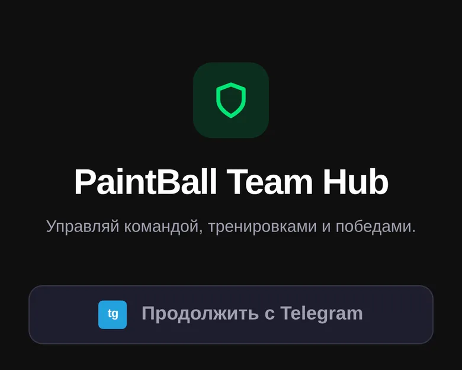
3Главный экран
Первое, что видишь после входа. Сверху — твоё имя и роль в команде, дальше три блока.
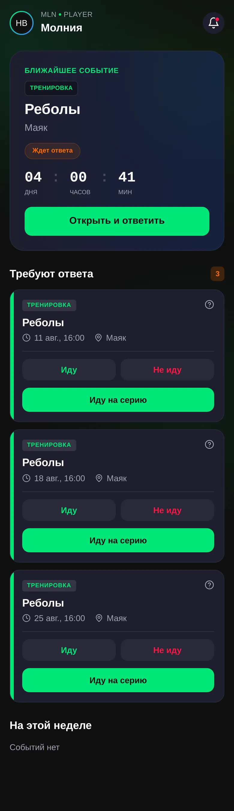
- Ближайшее событие — крупная карточка с обратным отсчётом (дни : часы : минуты). Если ты ещё не ответил, висит оранжевая плашка «Ждет ответа» и кнопка «Открыть и ответить».
- Требуют ответа — очередь событий, которые ждут твоего решения. Цифра справа — сколько их. Задача простая: свести к нулю.
- На этой неделе — что уже подтверждено и стоит в ближайших днях.
Внизу экрана — навигация из пяти вкладок: Главная Календарь Казна Команда Профиль. Она есть на всех экранах.
4Ответить на событие
Самое частое действие. Отвечать можно прямо из блока «Требуют ответа», не заходя внутрь события.
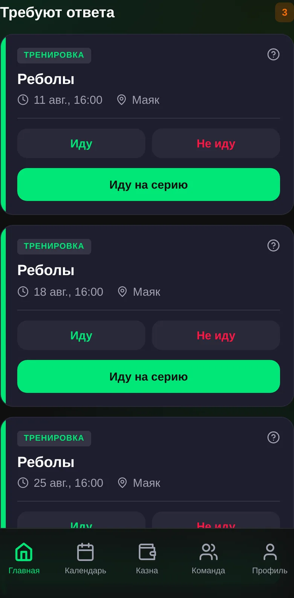
Внутри самого события кнопок три:
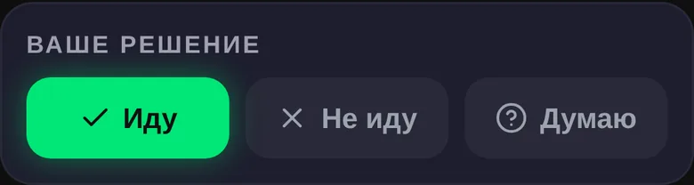
- Иду — тебя считают в составе.
- Не иду — капитан ищет замену заранее, а не в день игры.
- Думаю — честный вариант, когда правда не знаешь. Но событие остаётся в очереди «Требуют ответа», пока не определишься.
«Иду на серию» — для тренировок
Тренировки обычно ставятся серией: каждый вторник, пять занятий вперёд. Чтобы не тапать по каждой, есть «Иду на все» — одна кнопка записывает тебя на всю серию сразу.

На экране события также видно место, время и кто идёт: три группы — «Идут», «Молчат», «Не идут». Полезно посмотреть перед ответом: если в «Идут» пусто, а игра завтра — самое время расшевелить чат.
5Календарь
Вкладка «Календарь» — тот же список событий, но по месяцам. Под датой стоит точка: зелёная — тренировка, красная — турнир.
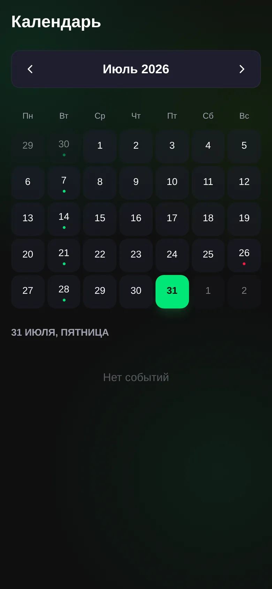
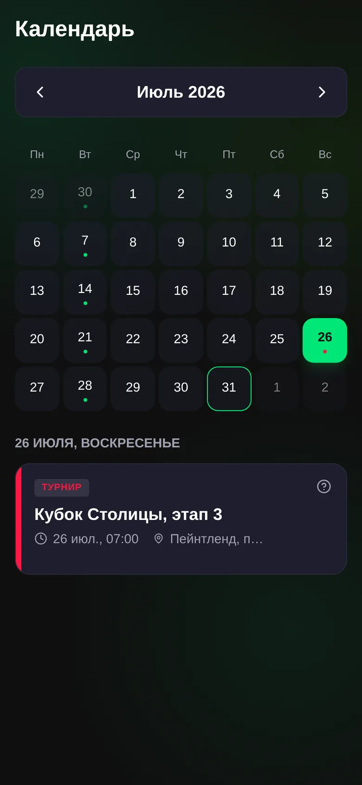
Тап по дню — снизу появляются события этой даты. Тап по карточке — откроется экран события.
6Экран турнира и как читать счёт
У турнира, в отличие от тренировки, есть расписание игр: во сколько какой гейм, против кого и в какой пит-зоне.

Строка гейма

Читается как на regevent.ru, откуда капитан переносит результаты:
- Слева — мы, справа — соперник. Всегда, без исключений.
- 4 зелёный бейдж — сторона, которая выиграла гейм.
- 3 красный — проиграла.
- – серый прочерк — счёт ещё не проставлен капитаном.
Под строкой — «Первая пара · Ближняя пит-зона»: в какой паре и с какой стороны поля играем. Справа кнопка «Пойнты» — вход в разбор гейма.
7Пойнты
Гейм состоит из пойнтов. Счёт 4:3 — это семь пойнтов: четыре наших, три соперника. Приложение раскладывает счёт на эти семь строк автоматически.

Что в строке:
- Слева бейдж — номер пойнта и результат: W выиграли, L проиграли, — ещё не размечено.
- Середина — статус твоей рефлексии: «Твоя рефлексия заполнена» или «не заполнена». Рядом «всего 5» — сколько человек из команды уже заполнили этот пойнт, и «есть разбор» — если капитан оставил свой комментарий.
- ✓ справа — твоя рефлексия за этот пойнт готова.
Тап по строке пойнта — открывается рефлексия.
8Рефлексия — 5 шагов
Это главное, ради чего всё затевалось. Пять коротких экранов на каждый пойнт. Заполняется за полминуты, если делать по горячим следам.
Шаг 1. Чем закончился пойнт для тебя
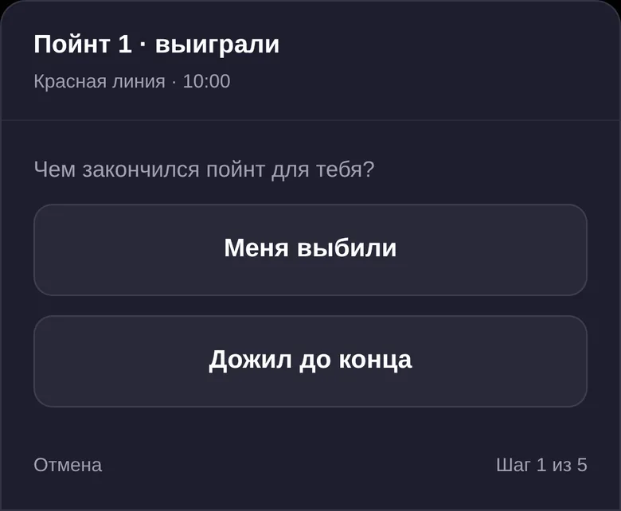
Два варианта: «Меня выбили» или «Дожил до конца». Если дожил — шаг 2 пропускается, потому что рассказывать про своё поражение нечего.
Шаг 2. Где и когда тебя выбили
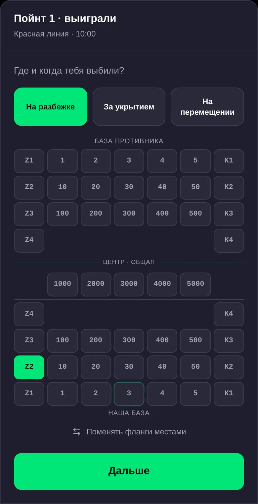
Сначала фаза:
- На разбежке — поймали на старте, до укрытия не доехал.
- За укрытием — стоял в точке и выбили там.
- На перемещении — снялся и не доехал.
Потом точка на поле. Схема сверху вниз: БАЗА ПРОТИВНИКА → ЦЕНТР · ОБЩАЯ → НАША БАЗА. Ткни то укрытие, где это случилось.
Шаг 3. Скольких выбил ты
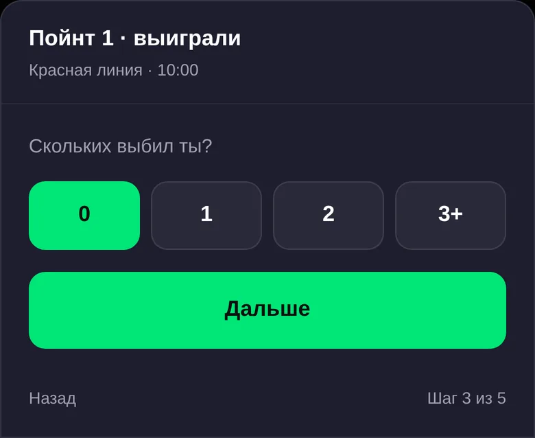
Выбираешь 0 / 1 / 2 / 3+. Если больше нуля — раскрывается блок на каждый килл: та же фаза и та же схема поля, но теперь про соперника.
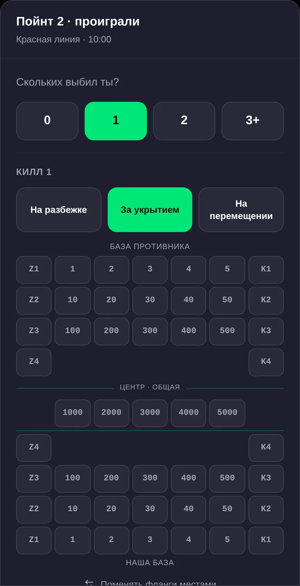
Отмечаешь, откуда ты его снял и где он стоял. Из этих точек потом собирается карта: где команда реально забирает пойнты, а где регулярно горит.
Шаг 4. Как отработал
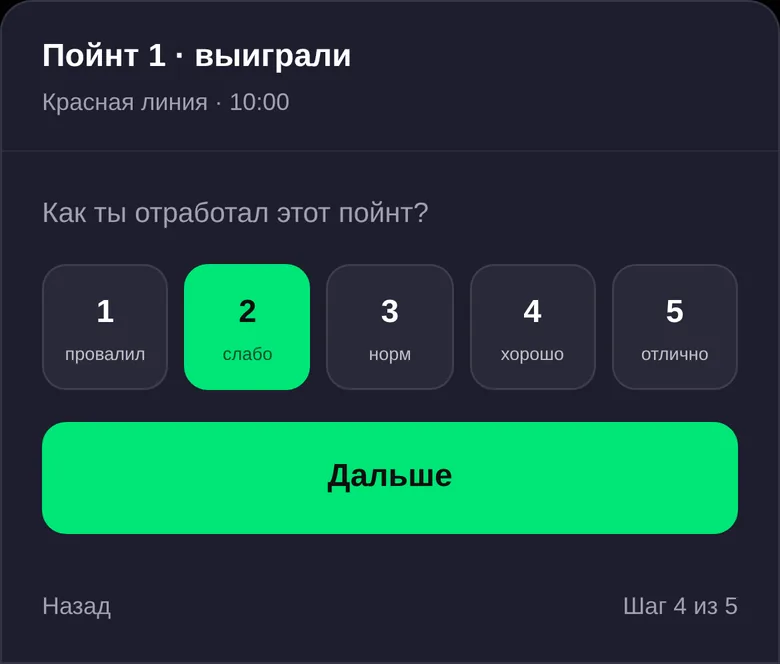
Честная самооценка от 1 — провалил до 5 — отлично. Это про твою работу, а не про результат пойнта: можно проиграть пойнт и отработать на 5, можно выиграть и отработать на 2.
Шаг 5. Что ещё было важного
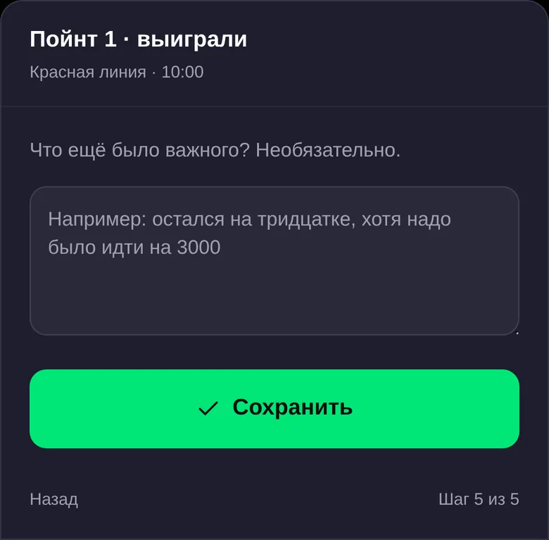
Свободный текст, можно пропустить. Но именно сюда стоит писать то, что кнопками не выразишь: «остался на тридцатке, хотя надо было идти на 3000», «не услышал перекличку», «сорвал темп на своём фланге».
Жмёшь «Сохранить» — появляется подтверждение: «Рефлексия за пойнт сохранена. Её видят капитан и тренер. Вернуться и поправить можно в любой момент.»
9Команда и статистика
Вкладка «Команда», две подвкладки.
Состав

Люди сгруппированы: Руководство (капитаны) → Тренерский штаб → Основной состав → Резерв / другие. У каждого ник, роль и статус: «В строю», «Отпуск», «Запас». Сверху — поиск по имени.
Статистика
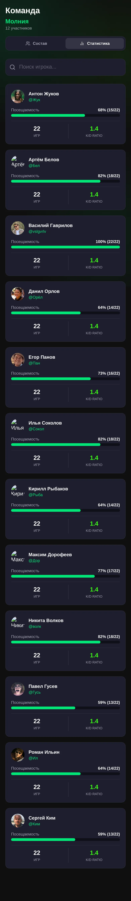
По каждому игроку три числа:
- Посещаемость — процент и полоса, например 82% (18/22). Считается по подтверждённым «Иду». Ещё один довод отвечать вовремя.
- Игр — сколько матчей сыграно.
- K/D ratio — выбил / выбили. Собирается из рефлексий. Не заполняешь — цифра не растёт.
Карточка игрока
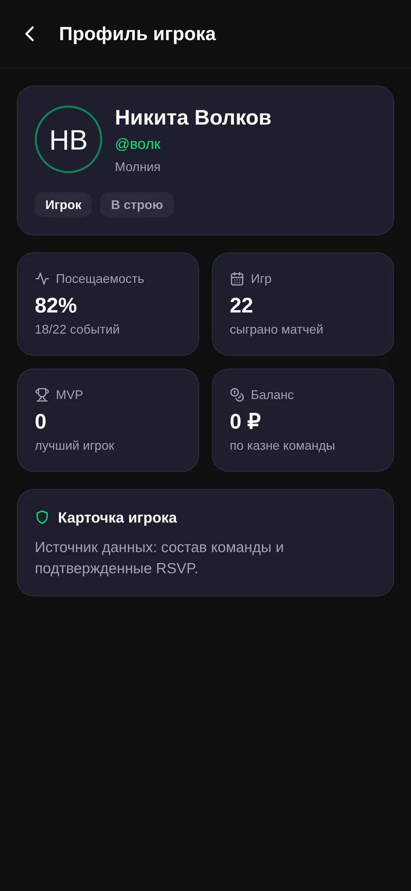
То же самое крупно, плюс MVP (сколько раз признавали лучшим) и баланс по казне. Карточки открыты у всех — видно и свою, и чужие.
10Казна

Сверху — общий баланс команды и долг игроков общей суммой. Ниже две вкладки:
- История — все движения: взносы, оплата турниров, закупка шаров, штрафы. Зелёное со знаком + — деньги пришли, красное с − — потратили. Указано, кто именно внёс.
- Должники — кто сколько должен.
Ты казну только смотришь — правки вносит капитан. Твоя задача: раз в месяц заглянуть, нет ли тебя в должниках.
11Профиль и календарь в телефоне
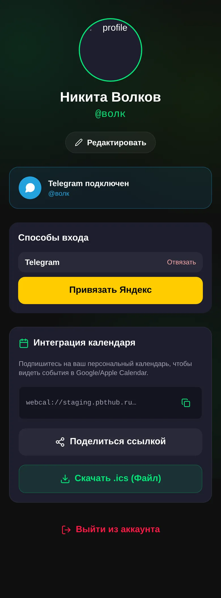
- Редактировать — имя, ник, аватар.
- Способы входа — Telegram уже привязан. Можно добавить Яндекс, чтобы заходить и им тоже.
- Интеграция календаря — самое полезное.
Как затащить события в календарь телефона
- Скопируй ссылку
webcal://…(иконка копирования справа). - iPhone: Настройки → Календарь → Учётные записи → Добавить → Другое → Подписной календарь → вставь ссылку.
Android / Google: calendar.google.com → «Другие календари» → «Подписаться по URL» → вставь ссылку. - Готово: тренировки и турниры сами появляются в календаре и напоминают о себе.
Есть и кнопка «Скачать .ics» — но это разовый снимок расписания, он не обновляется. Подписка лучше.